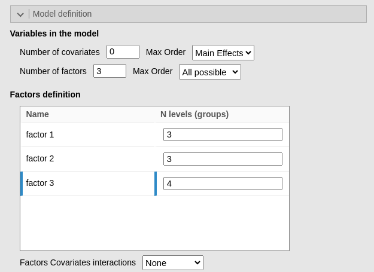
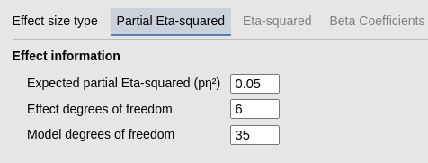
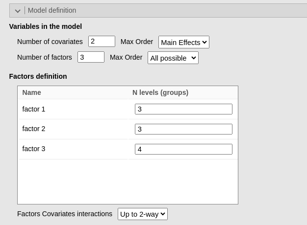
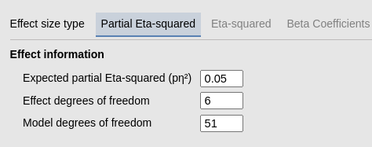

GLM options: computing degrees of freedom
Consistency checks
0.2.0
Here we check that the options provided by PAMLj to help constructing the power analysis yield correct results.
Model definition
GLM power analysis requires the user to input the degrees of freedom ( df ) of the effect associated with the test being evaluated and the model that produces that test. Whereas the effect df are usually simple to anticipate, the whole model df may be more challenging. For this reason, PAMLj offers some options to re-construct the model df based on the research design in the panel Model definition.
Now we check if the options work correctly by considering an hypothetical ANOVA design \(A (3) \times B (3) \times C (4)\) in which we want to estimate power for \(A*C\) interaction. Knowing the design, one can compute the effect df as \(df=(3-1)(4-1)=6\). For the model df, one can observe that there are \(K=3*3*4=36\) groups in the design, so the model df should be \(df=K-1=35\).
Let’s check what happens if one asks the module to reconstruct the model df. In Model definition we can declare that we have 0 covariates (continuous independent variables) and 3 factors, specifying their levels. We also declare that the model will involve all possible interactions among the factors (2-way, 3-way)

As soon as we define the factors levels, the Model degrees of freedom field gets updated to the correct number.

\(df=35\) as expected.
Let’s now consider a more complex example. Assume now that we want to estimate the model df in the design described above, knowing that there will be, together with the three factors just defined, also two covariates, and that we plan to estimate the two-way interactions between the covariates and the factors, but not interaction between covariates no higher (not more than 2) order interactions involving covariates. Analytically, we have \(df_1=35\) for the factors effects (main effects and interactions), plus \(df_2=2\) for the covariates main effects, plus \(df_3=(2+2+3)*2=14\) for the two-way interactions factorcovariate. Indeed, each factorcovariate interactions has df equal to the factor_df_, but there are two covariates, so we need to multiply by 2. The total must be \(df=df_1+df_2+df_3=35+2+14=51\). Let’s check the module results.

yielding 51 as expected.

References
’
Comments?
Got comments, issues or spotted a bug? Please open an issue on PAMLj at github or send me an email